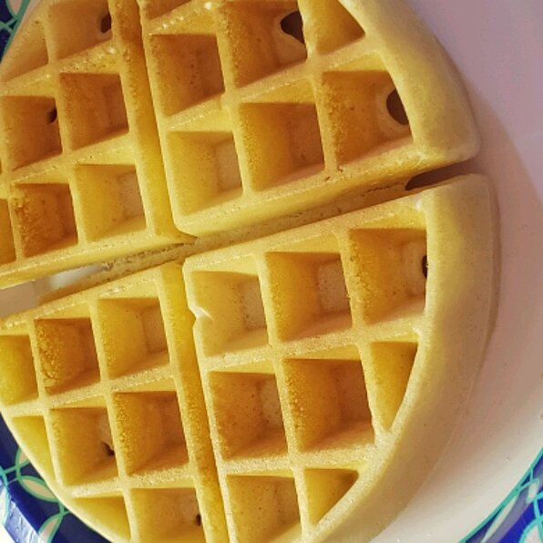

A lovely, crispy waffle perfect for the morning.
In a large bowl, mix together flour, salt, baking powder and sugar; set aside. Preheat waffle iron to desired temperature.
In a separate bowl, beat the eggs. Stir in the milk, butter and vanilla. Pour the milk mixture into the flour mixture; beat until blended.
Ladle the batter into a preheated waffle iron. Cook the waffles until golden and crisp. Serve immediately.
Per Serving: 379 calories; protein 10.2g; carbohydrates 47.6g; fat 16.2g; cholesterol 112.8mg; sodium 899.1mg. Full Nutrition
Retrun to homepage